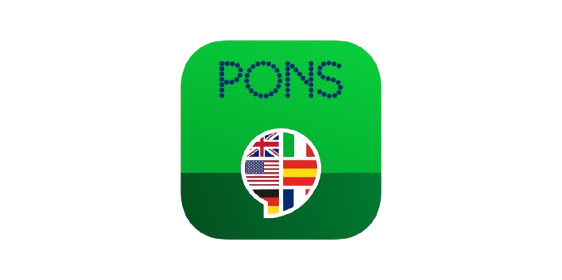

La traducción automática es una nueva forma de traducción que consiste
usar la inteligencia artificial con el objetivo de traducir de manera
automática un texto de una lengua a otra, todo proceso sin intervención
humana. Es cierto que, aunque los resultados no son nefastos, como hace
tiempo, todavía queda mucho por mejorar. Es ahí donde interviene el
entrenamiento de la IA basadas en redes neuronales. El uso de los
traductores automáticos permiten realizar la tarea de trasvase de
información de una lengua a otra con menor esfuerzo, pero mayor eficacia.
A continuación, dejo un enlace a un tradcutor automático muy conocido por
todos Google Translator

El Traductor de Google (del inglés Google Translate) es un sistema
multilingüe de traducción automática, desarrollado y proporcionado por
Google, para traducir texto, voz, imágenes o video en tiempo real de un
idioma a otro. Ofrece interfaz web, así como interfaces móviles para iOS
y Android, y una API, que los desarrolladores pueden utilizar para
construir extensiones de navegador, aplicaciones, y otros softwares. El
Traductor de Google posee la capacidad de traducir en 243 idiomas en
distintos niveles, el sistema provee un servicio gratuito y diariamente
es utilizado por más de 200 millones de personas. Desde diciembre de
2016, la traducción de textos gratuita ha sido limitada por Google a
5000 caracteres, mientras que la traducción de páginas web no posee
límite de extensión.
DeepL Translator es un servicio de traducción automática neural lanzado
en agosto de 2017 y propiedad de DeepL SE, con sede en Colonia,
Alemania. El sistema de traducción se desarrolló primero dentro de
Linguee y se lanzó como entidad DeepL. Inicialmente ofrecía traducciones
entre siete idiomas europeos y se fue ampliando hasta soportar 26
idiomas con 650 pares de idiomas. Inicialmente el traductor de DeepL se
podía utilizar de forma gratuita con un límite de 5.000 caracteres por
traducción. Desde julio de 2023 el volumen que se puede traducir de
forma gratuita ha descendido a 1.500 caracteres.También se pueden
traducir archivos de Microsoft Word y PowerPoint en formatos de archivo
Office Open XML (.docx y .pptx) y archivos PDF.

Desde el primer diccionario impreso hasta la traducción en línea; desde
el oeste de Stuttgart hasta China, Brasil e India; de los primeros
materiales para el aprendizaje de lenguas hasta los 2,2 millones de
ejemplares vendidos de la serie “Auf einen Blick” (“De un vistazo”):
PONS ha alcanzado mucho a lo largo de los años. Todo eso define quienes
somos. Solo mencionar el PONS Bildwörterbuch (Diccionario visual PONS)
de la serie revolucionaria de productos visuales que, junto a nuestros
socios de licencia internacionales, se tradujo a 43 idiomas diferentes,
entre los que se cuentan idiomas tan exóticos como el jemer, el maldivo,
el butanés y muchos otros. PONS es una de las editoriales dedicadas a
los idiomas líderes en Alemania. Desde 1978 desarrollamos al más alto
nivel los diccionarios típicamente verdes y material para el aprendizaje
de idiomas para aquellas personas que quieren aprender y hacer uso de
lenguas extranjeras. El nombre PONS, que significa puente en latín,
simboliza lo que hacemos desde hace décadas: ¡Unir a las personas
gracias al lenguaje! Ayudamos a nuestras usuarias y a nuestros usuarios
a tender puentes hacia otros países y otras culturas con gran éxito
gracias a nuestros productos digitales e impresos.